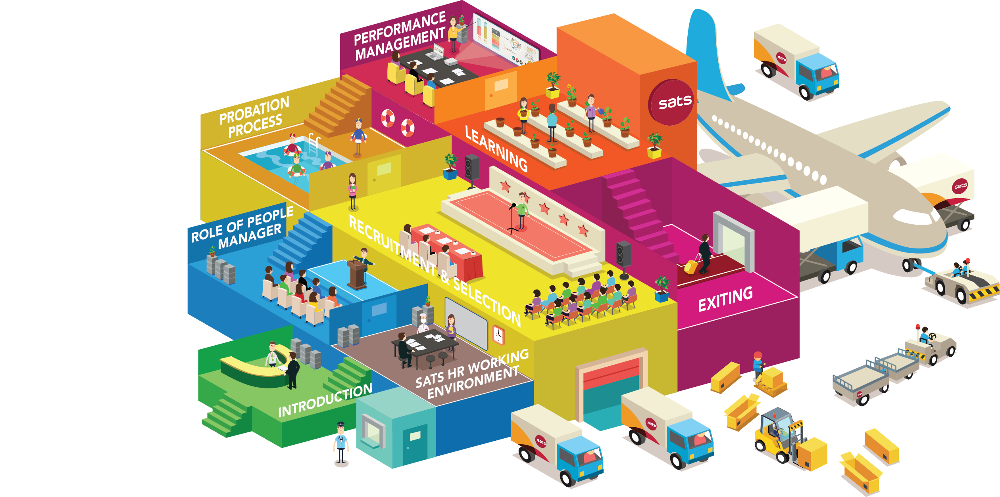
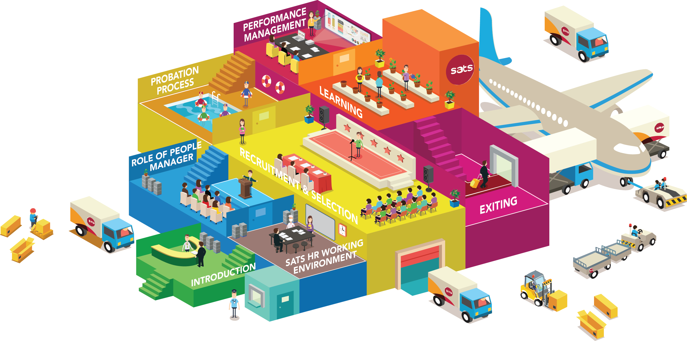

SATS PEOPLE 101 E-LEARNING
1. Course Introduction
2. SATS HR Working Environment
3. Role of People Manager
4. Recruitment & Selection
5. Probation Process
6. Performance Management
7. Learning & Career Development
8. Exiting
SATS PEOPLE 101 E-LEARNING
GROW
WITH
SATS
1
Course Introduction
2
Working Environment
2-1
SATS HR Working Environment
2-2
Fundamental Knowledge
2-3
Diversity
3
Role of People Manager
3-1
Manpower Planning
3-2
Engagement In Employment Lifecycle
4
Recruitment & Selection
4-1
The Cost Of Wrong Hire
4-2
How To Get A Right Hire
5
Probation Process
5-1
SATS Probation Process
5-2
On Boarding
5-3
KPI Setting
5-4
Confirmation
6
Performance Management
6-1
Performance Management Framework
6-2
Planning
6-3
Tracking / Coaching
6-4
Appraisal / Evaluation
6-5
Reinforcing / Developing
7
Learning & Career Development
7-1
People Development
7-2
Optimize Training Opportunity
7-3
Needs Vs Wants
7-4
Who Need The Training?
7-5
Knowledge Management
8
Exiting
8-1
Resignation
8-2
Retirement
8-3
What Should You Do On Staff’s Exit
8-4
Ending Activity

